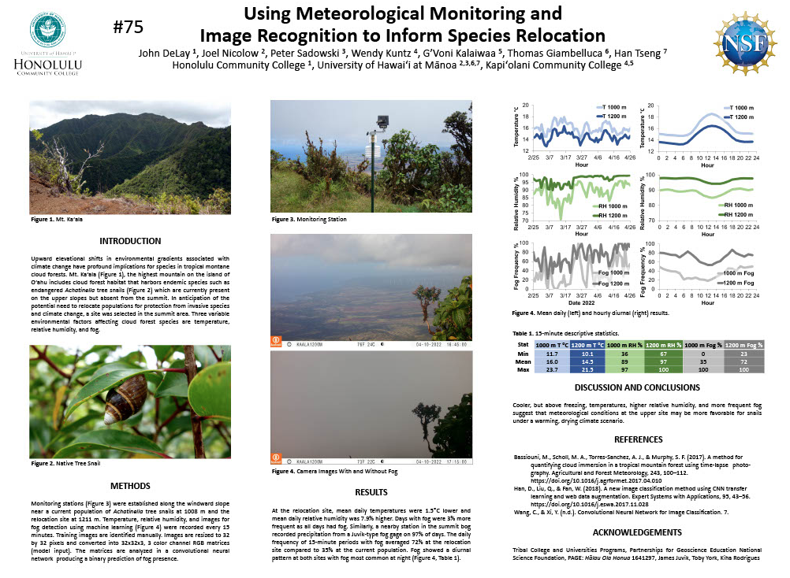

Upward elevational shifts in environmental gradients associated with climate change have profound implications for species in tropical montane cloud forests. Mt. Kaʻala, the highest mountain on the island of Oʻahu includes cloud forest habitat that harbors endemic species such as endangered Achatinella tree snails (pictured above pc Dr. John DeLay) which are currently present on the upper slopes but absent from the summit. In anticipation of the potential need to relocate populations for protection from invasive species and climate change, a site was selected in the summit area. Three variable environmental factors affecting cloud forest species are temperature, relative humidity, and fog.
Monitoring stations were established along the windward slope near a current population of Achatinella tree snails at 1008 m and the relocation site at 1211 m. Temperature, relative humidity, and images for fog detection using machine learning were recorded every 15 minutes. Training images were identified manually. Images were resized to 32 by 32 pixels and converted into 32x32x3, 3 color channel RGB matrices (model input). The matrices were analyzed in a convolutional neural network producing a binary prediction of fog presence.
At the relocation site, mean daily temperatures were 1.5°C lower and mean daily relative humidity was 7.9% higher. Days with fog were 3% more frequent as all days had fog. Similarly, a nearby station in the summit bog recorded precipitation from a Juvik-type fog gage on 97% of days. The daily frequency of 15-minute periods with fog averaged 72% at the relocation site compared to 35% at the current population. Fog showed a diurnal pattern at both sites with fog most common at night (Image below)